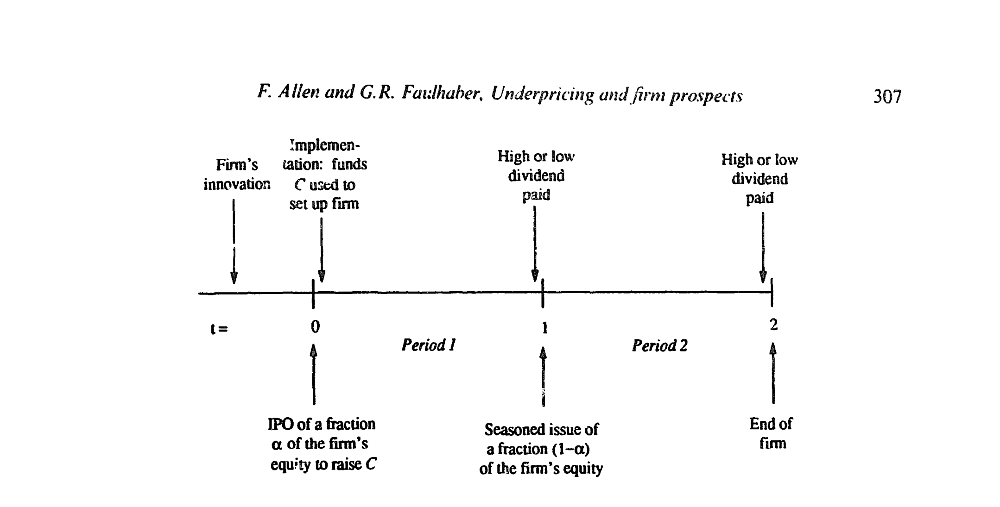
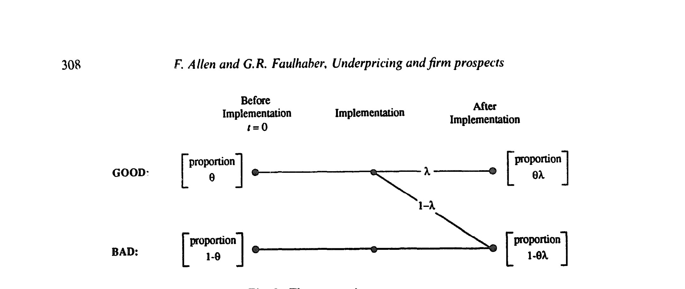
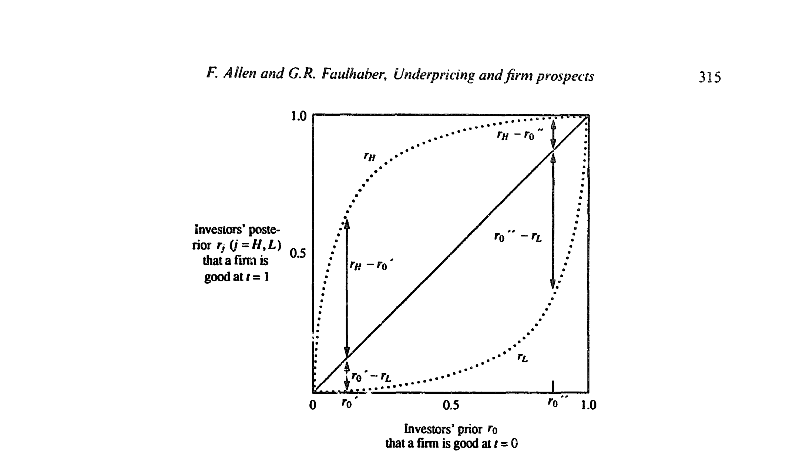
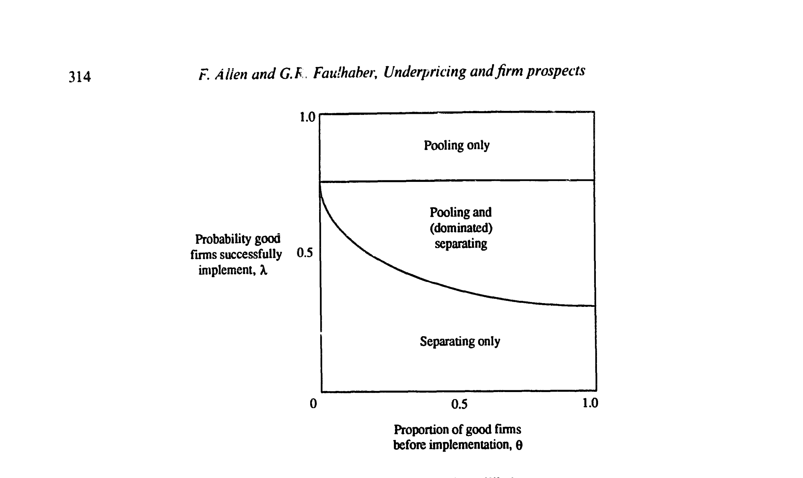
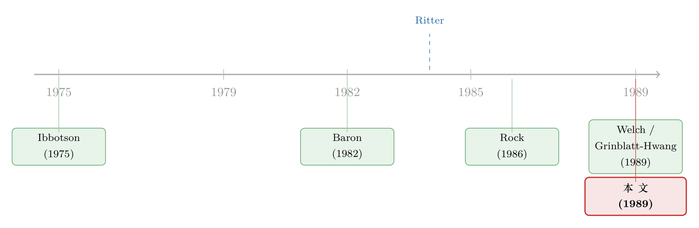

好公司为什么自愿把新股『贱卖』给你？
本文读的是 Allen & Faulhaber (1989, Journal of Financial Economics)：当公司自己最清楚前景、外人却看不透时，前景最好的公司会故意压低首次公开发行的价格，把钱「留在桌上」，作为一种别人模仿不起的信号；而所谓「热发行 (hot-issue) 市场」的折价与抢购，正是这种分离均衡在特定行业、特定时点上的集中爆发。
1 一个谁也说不圆的现象
先看一组让人别扭的事实。
Ibbotson (1975) 早就发现，新股 (initial public offering, IPO) 上市第一天的平均回报高得离谱；Smith (1986) 的综述把这个数字钉在了「平均折价超过 15%」。如果你是发行人，这意味着什么？意味着你把自家公司以远低于市场愿意付的价格卖了出去——上市当天，承销商分到票的人转手就能赚一笔，而这笔钱本来可以进你自己的口袋。
更别扭的是，这种折价不是均匀地撒在所有时间、所有行业里。Ibbotson & Jaffe (1975) 指出它有周期，只在某些时段出现；Ritter (1984) 进一步发现它扎堆在特定行业——比如 1980 年石油天然气公司的那一波新股。而且这些「热发行」往往被承销商配给 (rationing)：需求超过供给，最夸张的时候超出多达 20 倍 [Ritter (1986)]。
于是一个自然的问题是：一家理性的公司，为什么要主动干这种「赔本」的买卖？而且，为什么偏偏是某些行业、某些年份才这样？
在本文之前，市场上已经有两个有影响力的答案。Baron (1982) 说，是承销商比发行人更懂市场，发行人请投行去定价、销售，折价是付给这个信息优势的代理成本（关于这个模型，可参见《把承销商和发行人变成同一个人，新股还会打折吗？》）。Rock (1986) 则说，是投资者里有一拨人比发行人更懂这只新股：知情者只抢好票、躲开烂票，不知情的散户因此面对「赢家诅咒 (winner's curse)」，发行人必须整体折价才能把他们留在牌桌上（这个机制的实证，见《新股「打折」的钱，到底进了谁的口袋？》）。
但这两个答案都有一处过不去的坎。Ritter (1984) 点破了 Rock 模型的软肋：如果折价只在特定时段冒头，那 Rock 的逻辑就要求新股的风险构成在不同时段系统性地变化——可数据并不支持这一点。Baron 模型也被后续实证（把投行自己上市的案例拿来对照）证伪了。一句话：截至当时，文献里没有一个令人满意的「热发行」模型。
本文的切口，就是把信息优势的归属换一个人。
2 把「谁最懂」这件事，交还给公司自己
Baron 押注承销商最懂，Rock 押注部分投资者最懂。本文 (Allen & Faulhaber) 反其道而行：关于公司前景，最好的信息握在公司自己手里。
这个假设一旦立住，整个故事就翻转了：折价不再是发行人被信息劣势「宰」出来的损失，而是发行人主动发出的一个信号。它呼应的，其实是 Ibbotson (1975, p. 264) 当年那句几乎是顺口一提的猜想——新股之所以折价，是为了「在投资者嘴里留下好味道 (leave a good taste in investors' mouths)」，好让同一个发行人将来的增发能卖出好价钱」。
本文要做的，就是把这句直觉，变成一个严丝合缝的均衡。而真正关键的一步在于：它得回答一个所有信号模型都绕不开的问题——这个信号为什么烧不起？凭什么只有好公司舍得烧、坏公司模仿不来？
我们一步步把模型搭起来。
3 模型设定：两期、两类、一次实施
把进入市场的公司总数标准化为 1。时间线如下图：t=0 创始人发行 IPO，卖出公司股权的一个比例 α₀，募集建立公司所需的资本 C；t=1 第一期股利发放后，创始人再把剩下的 1−α₀ 股权通过增发 (seasoned issue) 卖掉（设定上，创始人是创业专家而非守成专家，所以要功成身退）；t=2 公司清算。公司在每期末把全部盈利作为股利付出，股利非高 (H) 即低 (L)，H > L ≥ 0。

Figure 1: The sequence of events
公司分两类：好 (G) 与坏 (B)，好公司的期望股利流更高。但「好」不是一锤定音的——它要经过一道实施 (implementation) 的筛子：
- 进入市场的公司中，比例
θ（0 < θ < 1）拥有好创新，1−θ是坏创新； - 好创新需要被成功实施才能保持「好」，成功概率为
λ（0 < λ < 1）；实施失败的好公司沦为坏公司；坏创新则永远是坏公司。
于是实施之后，市场上好公司的比例是 θλ，坏公司比例是 1−θλ。

Figure 2: The uncertainty structure
最要紧的是 t=0 时双方的信息差：创始人知道自己的创新是好是坏（i = G, B），但还不知道实施会不会成功；投资者则两样都看不见，只能观察到 (i) IPO 卖出的比例，和 (ii) 各期末的股利。实施成功后，好公司付高股利 H 的概率是 π_G，坏公司付高股利的概率只有 π_B，且 π_G > π_B。
这个「0 < λ < 1」的设定，后面会被证明是整个机制成立的命门——先记住它。
4 投资者怎么学：贝叶斯更新
投资者拿到股利信号后，会按贝叶斯法则修正「这家公司是好公司」的概率。设投资者的先验为 r₀，观察到一期股利后的后验，就是那一档股利来自好公司的概率，除以它来自任意一家公司的概率：
$$ q_H(r_0) = \frac{r_0\,\pi_G}{r_0\,\pi_G + (1-r_0)\,\pi_B} $$
$$ q_L(r_0) = \frac{r_0\,(1-\pi_G)}{r_0\,(1-\pi_G) + (1-r_0)\,(1-\pi_B)} $$
直觉很清楚：看到高股利 H，投资者上调「是好公司」的概率（q_H > r₀）；看到低股利 L，则下调（q_L < r₀）。π_G 与 π_B 离得越开，一次股利透露的信息量就越大，后验跳得越狠。

Figure 4: Bayesian updating
有了后验，就能给公司估值。t=1 时投资者已观察到 j = H 或 L，记后验为 Q = q(r₀)，用一期贴现因子 δ 把第二期股利贴现，公司价值为
$$ V_1(Q) = \delta\Big\{ H\big[Q\,\pi_G + (1-Q)\,\pi_B\big] + L\big[1 - Q\,\pi_G - (1-Q)\,\pi_B\big] \Big\} $$
也就是把第二期的 H 和 L，用「考虑了第一期表现之后」的发生概率加权。
再往前推一步：给定先验 r₀，实施之后（类型已定为 i = G, B）投资者眼中公司的期望回报 R_i(r₀)，是各档股利结果（当期股利 + 该结果下公司的后续价值）按概率加权之和。好公司的 R_G 恒高于坏公司的 R_B；而且对任一类型，投资者越乐观（r₀ 越大），公司回报越高——这两条单调性，是后面分离能成立的弹药。
5 核心：好公司的算盘，与那个「烧不起」的信号
现在回到创始人 t=0 的决策。注意此刻创始人只知道自己创新的好坏，还不知道实施成败。
一家坏创新公司若以价格 p₀、比例 α 发行，在投资者持先验 r₀ 时，创始人的期望回报是
$$ \bar{R}_B(p_0, r_0) = \alpha\,p_0 + (1-\alpha)\,R_B(r_0) - C $$
而好创新公司，要把「实施可能失败」算进去——成功（概率 λ）保持好、回报 R_G，失败（概率 1−λ）沦为坏、回报 R_B：
两个约束把可行的 (p₀, α) 框住：公司至少得募到 C，所以 α·p₀ ≥ C；价格又不能超过公司在投资者眼里的价值，所以 p₀ ≤ V₀(r₀)。
接下来是全文的灵魂。任何一家公司当然都希望投资者认为自己是好公司——因为投资者相信你好，你卖股票就卖得贵。但好公司若想让投资者真的相信，就得放弃一部分本可拿到的回报：把 p₀ 压到低于本可索取的价格（同时多卖掉一些股权）。这笔「自愿放弃的回报」就是信号的成本。
信号要管用，这笔成本必须大到足以吓退坏公司去模仿。这里就要回到第 3 节那个命门 0 < λ < 1。本文用两个反例说明它为什么不可或缺：
- 若股利完全确定（
π_G = 1, π_B = 0）：t=1时公司类型被股利一次性彻底暴露，投资者t=0的先验对t=1的估值毫无影响——既然如此，谁也没有动机在t=0花钱发信号。结果是混同 (pooling)，r₀ = θλ。 - 若好创新必然实施成功（
λ = 1）：在理性预期下r₀ = λ = 1，那么无论后续股利如何，先验等于后验（r₀ = r_H = r_L = 1），信号的收益与股利结果无关——既然收益不依赖于「将来会不会露馅」，坏公司模仿这个信号一样划算，分离就崩了，又回到混同r₀ = θλ。
把两头一夹，分离均衡能存在的必要条件，正是 0 < λ < 1：唯有当好公司「将来可能露馅、但好公司露馅的概率更低」时，折价这个信号才对好公司更便宜、对坏公司更昂贵——这就是信号模型里那条单交叉 (single-crossing) 的脊梁。坏公司若硬学好公司去折价，它将来付低股利、被市场识破的概率更高，那笔折价就打了水漂；好公司则更可能用后续增发的好价钱把折价捞回来。
于是本文的 Proposition 1 成立：在满足若干条件时，分离均衡 (separating equilibrium) 存在，且其中必然发生配给——因为好公司的要价 p₀ 低于一家「已知是好公司」的市场出清价 V₀(λ)，供不应求，承销商只能按配给规则（如 NASD 的公平交易规则不允许在超额需求下抬价）把票分出去。这正好对上了经验事实里「折价 + 抢购 + 配给」三件套。
作为对照，Proposition 2 给出混同均衡存在的条件，此时市场出清、不发生配给；Proposition 3 则有一个意味深长的结论：当分离与混同均衡同时存在时，无论好公司还是坏公司，都在混同均衡里活得更好——分离均衡是帕累托被支配的。也就是说，好公司之所以折价，并不是因为它「想」，而是因为在某些市场条件下，它别无选择地被推进了那个谁都不情愿、却又自我实现的分离均衡。
6 把模型接回现实：热发行为什么是「临时的、行业性的」
模型最漂亮的地方，是它能解释 Rock 模型解释不了的那个「时空不均匀」。
关键开关是建立公司的成本 C 相对于投资者估值 V₀(r₀) 的位置。图 3 画出了：在 C < V₀(0)（即便被当成坏公司也覆盖得了成本）时，均衡类型如何随「好公司成功实施概率 λ」与「好创新比例 θ」分区——λ 适中时分离与混同可能并存，λ 很高时混同占优。

Figure 3: Uncertainty and type of equilibrium
把这套逻辑套到 1980 年的石油天然气热潮上：1979 年石油危机这个外生冲击，突然把能源类新创公司的预期盈利能力大幅抬高，对应模型里 θ 趋近于 1（几乎所有创始人都相信自己手里是好创新），而这正是 C < V₀(0) 得以长期成立、分离与折价得以发生的土壤。Ritter (1984) 记录到「几乎所有这些（与自然资源相关的）股票都有很大的首日跳涨」（p. 224），与此吻合。
于是本文导出几个可检验含义：(i) 每当某个外生冲击大幅抬高一个行业的盈利前景，该行业就会出现热发行；(ii) 这种市场会持续到新进入的公司数目逼近新的均衡水平、入场停止为止——所以热发行注定是临时的、行业特定的、与「进入的感知盈利能力改善」相伴的；(iii) 模型还给出一个边际预测：在热发行市场里，所发行股份比例对募资额的弹性应小于 1。这些都是 Baron 和 Rock 的模型给不出的、把「为什么是这个行业、这个年份」直接写进结论的预测。
7 文献脉络
把这条线捋一捋。
最早是 Ibbotson (1975) 与 Ibbotson & Jaffe (1975) 把「IPO 折价」与「折价的周期性」摆上台面，前者还顺手留下了「留个好味道」的信号猜想。Ritter (1984) 用 1980 年的热发行把「折价集中在特定行业、特定时点」钉成了一个硬事实，同时戳破了既有理论。
理论一侧，Baron (1982) 从承销商的信息优势出发、Rock (1986) 从投资者的赢家诅咒出发，各自给折价提供了机制，但都解释不了时空的不均匀（关于 Rock 这一脉里「自由进入下仍有折价」的均衡与证券设计，可参见《自由进入的市场里，为什么钱还能「白赚」？》）。
本文 Allen & Faulhaber (1989) 把信息优势交还给公司自己，用一个「实施成败 + 贝叶斯学习」的结构，让折价成为好公司的可信信号，并第一次把热发行的「临时性、行业性」内生出来。几乎同时的 Grinblatt & Hwang (1989) 与 Welch (1989) 走的是同一族路子——折价信号、先发部分股权、信息揭示后再增发；区别在于，那两篇里公司类型是被某种外生方式（随机地）完全揭示的，而本文的学习来自投资者对公司自身（带噪声的）业绩做贝叶斯更新。Welch 那条「折价 + 锁定期 + 信息动量」的支线，后来被《新股「打折」那点钱，原来是老板留给六个月后的自己》接着往下走。

8 评论与延伸（Q&A + 研究方向）
(a) 几个可能的疑问
Q：这和 Rock (1986) 的赢家诅咒到底差在哪？
差在「谁知道得多」。Rock 里是部分投资者比发行人懂，折价是补偿不知情散户的赢家诅咒，是被动的、跨发行人摊平的。本文里是公司自己最懂，折价是好公司主动发出、坏公司学不来的信号。最关键的经验区别：Rock 要求折价时段的风险构成系统变化（数据不支持），本文则把折价绑定到「行业盈利前景的外生跳变」，能解释时空不均匀。
Q：好公司「贱卖」IPO，真的划算吗？钱不是白白送人了？
短期是净损失，但模型里它能从后续增发把这笔钱赚回来——而且只有好公司赚得回来，因为只有好公司更可能用亮眼的后续业绩把价格顶上去。Welch (1989) 提到约三分之一的发行人会在 IPO 后回来做增发，且募资额往往是 IPO 的数倍，这给「为后续融资发信号」提供了现实支点。
Q：为什么折价非得是信号，换个便宜点的信号不行吗？比如捐钱给慈善？
本文专门回应了这点。给慈善捐款要让投资者能监督、能识别有没有暗地里的回款，监督成本高；而折价的妙处在于投资者本人就是受益人，无需任何监督。因此在信息上等价的信号里，折价会胜出。它还附带降低诉讼概率与赔偿、并更可能给好公司带来正面曝光（如《华尔街日报》报道的「IPO 赢家」）。
Q：0 < λ < 1 这个条件凭什么这么重要？
它是单交叉条件的来源。
λ = 1（好公司必成功）会让先验在估值里失去作用，信号收益与未来业绩脱钩，坏公司照学不误；股利完全确定则让类型被一期暴露，无人愿意预先花钱发信号。只有「将来有可能露馅、但好公司露馅概率更低」时，折价对好公司才严格更便宜——分离才立得住。
Q：Proposition 3 说混同帕累托优于分离，那为什么现实里还会出现折价？
因为均衡的「选择」不由谁的偏好决定。当市场参数（尤其
C < V₀(0)且λ适中）把经济推入只有分离均衡存在、或分离是被信念自我实现地选中的区域时，好公司就被迫折价——哪怕大家都知道混同更好。这正是信号博弈的悲剧性：可信性要求把成本真烧出来。
Q：模型预测折价是「临时、行业性」的，可分散在各行业的长期平均折价又怎么解释？
本文不打算解释「永远、处处」的折价，它瞄准的是热发行这一子现象。长期平均折价里，可能混入了 Rock 式赢家诅咒、Baron 式代理成本、承销商价格支持等多种成因；本文的贡献是把其中「周期性、行业性」的那一块单独拎出来给了一个自洽机制。
(b) 几个可能的研究问题与提案
1. 把「信号—后续融资」逻辑搬到公司债首发。 【经济故事】本文的核心是「先贱卖、后从二次发行捞回」。债券市场也有类似结构：首次公开发债的折价（首日二级市场跳涨）可能是发行人为「将来更便宜地滚动发债」发的信号，而债的「类型」（违约风险）恰恰会随后续基本面被债券持有人贝叶斯地更新。 【可行性】中。需要新债首发的一级价格与上市后二级成交（TRACE）、以及同一发行人后续发债的利差序列；识别上可用「行业外生盈利冲击」做类似 Ritter 的事件切口。难点是债的折价远小于股、且被流动性溢价污染，需要干净的流动性度量来剥离。
2. 外资持有人作为「学习者」：信号在跨境 IPO 里更贵还是更便宜？
【经济故事】本文的信号成本取决于投资者学习的速度（π_G − π_B 的大小）。若边际投资者是信息更差的外资，贝叶斯更新更慢，好公司要发同样可信的信号就得烧更多——预测跨境/海外上市的折价更深。
【可行性】中高。可用各国 IPO 数据集 + 发行后外资持股比例（如「可投资度」），比较高/低外资参与下的首日折价与后续增发概率。识别担忧是外资偏好与公司质量内生相关，需要用指数纳入等准自然实验做外生变动。
3. 用「热发行是临时的」这条预测做证伪检验。
【经济故事】模型给出一个尖锐的动态预测：热发行随行业进入逼近新均衡而自我终结，且伴随「发行股份比例对募资额弹性 < 1」。这是个可以直接证伪的结构含义。
【可行性】高。需要按行业—年份聚合的 IPO 数量、折价、以及 α₀ 与募资额。直接估计弹性、并检验热度衰减是否与行业进入饱和同步即可。数据现成，主要是把行业「外生冲击」识别干净。
4. 区分 Allen-Faulhaber 与 Welch/Grinblatt-Hwang：揭示是「内生学习」还是「外生披露」？
【经济故事】三个模型的观测含义高度重叠，但本文强调类型经由公司自身带噪业绩被学习，另两篇靠外生揭示。能否找到一个场景，让「业绩噪声大小」外生变化，从而把两类机制分开？
【可行性】中。可利用行业间「业绩可观测性/会计透明度」的差异作为 π_G − π_B 的代理，检验折价深度是否随之系统变化——本文预测透明度越低（学习越慢）信号越贵，外生披露模型则未必。
9 参考文献
- Allen, F. & Faulhaber, G. R. (1989). Signalling by underpricing in the IPO market. Journal of Financial Economics 23(2), 303–323.
- Allen, F. & Faulhaber, G. R. (1988). Optimism invites deception. Quarterly Journal of Economics 103(2), 397–407.
- Baron, D. P. (1982). A model of the demand for investment banking advising and distribution services for new issues. Journal of Finance.
- Grinblatt, M. & Hwang, C. Y. (1989). Signalling and the pricing of new issues. Journal of Finance.
- Ibbotson, R. G. (1975). Price performance of common stock new issues. Journal of Financial Economics.
- Ibbotson, R. G. & Jaffe, J. F. (1975). "Hot issue" markets. Journal of Finance.
- Ritter, J. R. (1984). The "hot issue" market of 1980. Journal of Business.
- Rock, K. (1986). Why new issues are underpriced. Journal of Financial Economics.
- Smith, C. W. (1986). Investment banking and the capital acquisition process. Journal of Financial Economics.
- Tinic, S. M. (1988). Anatomy of initial public offerings of common stock. Journal of Finance.
- Welch, I. (1989). Seasoned offerings, imitation costs, and the underpricing of initial public offerings. Journal of Finance.
我的判断：这篇论文的真正贡献，不在于「折价是信号」这个结论本身（同期至少有两篇在做类似的事），而在于它把信号的可信性结构化地挂到了一个「实施成败 + 贝叶斯学习」的机制上，从而第一次让「热发行为什么是临时的、行业性的」这件事内生地长出来。这是它压过 Baron 与 Rock 的地方。
但要诚实地说担忧：第一，它是个纯理论，文末那几条可检验含义在论文写作时尚未被检验，模型与数据之间隔着一层未兑现的承诺。第二，Proposition 3（混同帕累托占优）让人不安——既然分离对谁都更糟，模型其实需要一个更硬的均衡选择理由来解释现实里为何偏偏落到折价，论文在这一步靠的是参数分区，而非博弈精炼，多少有点「假设掉了问题」。第三，它把折价完全归给信号，对承销商价格支持、配给规则等替代解释只在文字上做了「折价信号更优」的论证，缺少把它们同时塞进一个框架里对账。
后续我最想看到的，是有人拿同一发行人「IPO 折价—后续增发价格」的配对序列，去直接检验那条「好公司能把折价捞回来」的核心机制——这是本文整座大厦的承重墙，却也是最难被直接看见的一块。